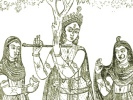

Hinduism Index Previous Next

Hindu Mythology, Vedic and Puranic, by W.J. Wilkins, [1900], at
Chaitanya is believed by his followers to have been an incarnation of Vishnu; and as he lived in historical times, about 300 years ago, it is interesting to notice
how a human being came to be regarded as divine. He is worshipped in Nadiya in Bengal, and it is a singular fact, that, at his shrine, there is a very small image of Krishna, of whom he was a disciple and apostle, whilst the image of Chaitanya is large and conspicuous. The Hindus who acknowledge this god say that, amongst the many incarnations of Vishnu, four are most important. The first, in the Satya-yuga, called the Suklavarna (the white), was Ananta; the second, in the Treta-yuga, called the Raktavarna (the red), was that of Kapiladeva; the third, in the Dwārpara-yuga, called the Krishnavarna (the black), was Krishna; and the last, in the Kāli-yuga, called the Pitavarna (the yellow), was Chaitanya.
The founder of the sect, of which Chaitanya was the most illustrious member, was a Brāhman named Adaitya, who lived at Santipore in Bengal. Another leader, named Nityananda, was born at Nadiya a short time before Chaitanya. Chaitanya's father was a Brāhman, named Jagannāth Misra; his mother's name was Suchi; their first son, Visvambhara, was a religious mendicant. When their renowned son was born, his mother was rather old; and as the child seemed weak, in accordance with a custom which prevailed in those times, he was hung in a basket on a tree to die. Adaitya happening to pass by the house at the time, imagining that the child thus exposed might be the incarnation of deity he was expecting, and which he had foretold, wrote with his foot on the soft earth the incantation employed at the initiation of a disciple into the mysteries of the worship of Krishna. The mother, impressed by this act, lifted the child from the tree, who immediately took kindly to his food, which he had before neglected, and showed signs of strength and vigour.
Chaitanya made great progress in learning. At sixteen he married Vishnupriyā, with whom he lived until he was forty-four years of age, when he was persuaded by Adaitya and other mendicants to renounce his poitā (Brāhmanical thread) and join them in their religious life. This was to lose his high position as a Brāhman. Leaving home, parents and wife, he removed to Benares, and many thought him guilty of a great crime in forsaking a large family that was dependent upon him for support. On his arrival at that city he began to teach the doctrines of his sect and gathered many disciples. He called them Vaishnavas—worshippers of Vishnu—and although his teaching was diametrically opposed in many important matters to orthodox Hinduism he was eminently successful. Many who had formerly chiefly worshipped Siva and other deities, adopting his teaching, made Krishna the supreme. The main tenets of his teaching were these: That men should renounce a secular life, and spend their time in visiting shrines; that they abandon the distinctions of caste, and eat freely with all who joined their sect, whatever their caste might be; and that they honour the name of Vishnu, and exercise bhakti (or trust) in that god as the means of salvation. He allowed widows to remarry; forbade the eating of flesh and fish, and the worshipping of those deities to whom animal sacrifices were offered; and further, that his disciples should not hold fellowship with those who offered such sacrifices. It is a curious coincidence that about the same time that Luther was preaching salvation by faith, in Europe, Chaitanya in India was giving prominence to the doctrine that salvation was to be obtained through faith (bhakti) in Krishna.
From Benares Chaitanya went to Puri, the great
shrine of Jagannāth, where he proclaimed his doctrines to the many pilgrims he met there; and whilst there it is said that he obtained four additional arms. Adaitya and Nityananda, who had induced him to assume the position of leader, remained for some years in Benares doing similar work; but though they afterwards returned to the secular state, their descendants are greatly respected by the members of this sect. It is reckoned that about one-fifth of the Hindus of Bengal are followers of this teacher. Immoral women generally profess to be his disciples. By their conduct they have excommunicated themselves from orthodox Hindu society, and being outcasts cannot secure the proper performance of their funeral rites. As members of this casteless sect these rites are not refused them.